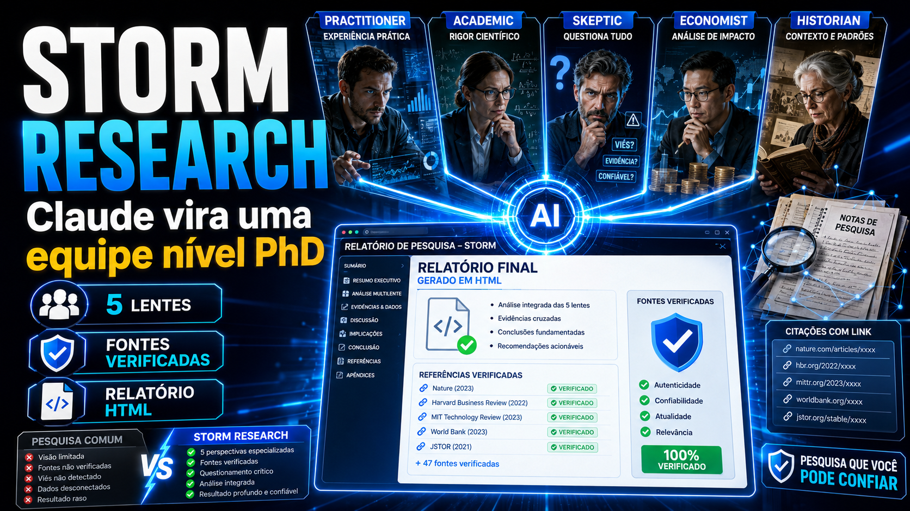
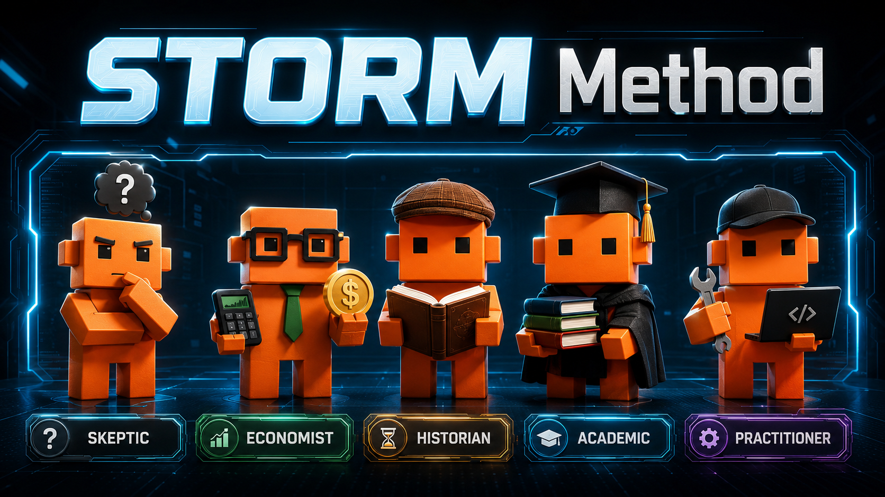

STORM METHOD · STANFORD · CLAUDE CODEStop researching with
a single angle.
STORM turns a topic into a multi-perspective HTML briefing: five specialists research the topic in parallel, a map shows where they contradict one another, and each citation is checked against the primary source before you trust it. All packaged in a skill for Claude Code that you can install in minutes.
How STORM works
A topic triggers five lenses in parallel; they converge in a report; verifiers check each source. A single prompt sees only a fraction of this.
Illustrative diagram: the cyan boxes are the parallel agents (the five perspectives); green is the input topic and the final briefing.
The five lenses
Each lens is a specialist with its own priorities: the skeptical questions everything, the economist follow the money, the historian looks for patterns, the academic requires rigor, and the professional brings the practical side. Together, they cover what a single angle misses.

You know each lens in detail in Track 1 (Module 1.2).
What you’ll learn
Why multiple perspectives
The single-prompt blind spot, the five expert lenses, and the three pillars: subagents, contradiction map, and source verification.
Install and run
The anatomy of the skill, how to install it in Claude Code (and Codex), the 4-phase pipeline, and your first end-to-end report.
Master and extend
Read the HTML report, trust the verification system, customize the lenses (the 6th lens), and understand the safeguards that set STORM apart from an ordinary report.
Course map
⬇️ Download the skill and the template
The two files that make up the skill storm-research. Release them into .claude/skills/storm-research/ and the skill works — with no dependencies, scripts, or paid services.
Track 2 teaches you how to install it step by step. Available in Portuguese and English.
💡 About the method
STORM is a multi-perspective research method that originated at Stanford. This course teaches the operational version packaged as a Claude Code skill—five lenses, a contradiction map, and citation verification—and shows you how to adapt it to your work.